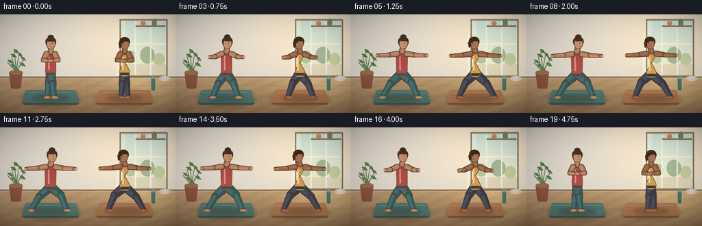
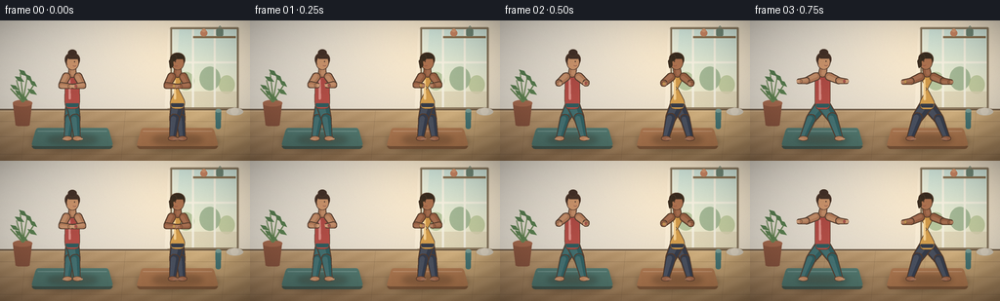
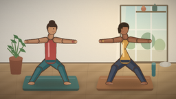
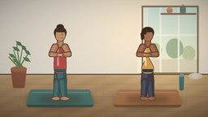
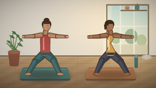

CODING AGENTS AS PIXEL WORLD MODELS
traex/DeepSeek-V4.1-Flash · instance_preservation_0031
点击播放 · 原生 RGB 像素
此结果可播放，但该运行尚未通过最终提交审核。页面展示不代表评测通过。
逐轮保存的候选
回放视频、检查图与代码变化。
每份候选均可单独播放。实际图片检查记录在下方工具轨迹中。
候选 01播放与检查图
点击播放 · 原生 RGB 像素


展开代码变化
--- 上一保存版本
+++ 本次保存版本
@@ -0,0 +1,495 @@
+from pathlib import Path
+import math
+
+import numpy as np
+from PIL import Image, ImageDraw, ImageFilter
+
+import artifact_io
+
+
+CASE_DIR = Path(__file__).resolve().parent
+W, H = 1024, 576
+OUT_W, OUT_H = 256, 144
+FRAMES = 20
+FPS = 4.0
+
+
+def lerp(a, b, t):
+ return tuple(float(x) + (float(y) - float(x)) * t for x, y in zip(a, b))
+
+
+def mix(a, b, t):
+ return tuple(int(round(float(x) + (float(y) - float(x)) * t)) for x, y in zip(a, b))
+
+
+def smoothstep(t):
+ t = max(0.0, min(1.0, t))
+ return t * t * (3.0 - 2.0 * t)
+
+
+def rounded_polygon(points, radius):
+ """Return a polygon with rounded vertices."""
+ out = []
+ n = len(points)
+ for i, p in enumerate(points):
+ p0 = np.array(points[(i - 1) % n], dtype=float)
+ p1 = np.array(p, dtype=float)
+ p2 = np.array(points[(i + 1) % n], dtype=float)
+ d0 = p0 - p1
+ d2 = p2 - p1
+ l0 = np.linalg.norm(d0)
+ l2 = np.linalg.norm(d2)
+ if l0 < 1e-6 or l2 < 1e-6:
+ out.append(tuple(p1))
+ continue
+ d0 /= l0
+ d2 /= l2
+ a0 = p1 + d0 * min(radius, l0 * 0.45)
+ a2 = p1 + d2 * min(radius, l2 * 0.45)
+ steps = 5
+ for j in range(steps + 1):
+ u = j / steps
+ q = (1 - u) ** 2 * a0 + 2 * (1 - u) * u * p1 + u * u * a2
+ out.append(tuple(q))
+ return out
+
+
+def tapered_capsule(a, b, ra, rb):
+ a = np.asarray(a, dtype=float)
+ b = np.asarray(b, dtype=float)
+ v = b - a
+ length = max(np.linalg.norm(v), 1e-6)
+ d = v / length
+ n = np.array([-d[1], d[0]])
+ pts = []
+ for center, radius, start in ((a, ra, math.atan2(n[1], n[0])), (b, rb, math.atan2(-n[1], -n[0]))):
+ for k in range(9):
+ ang = start + math.pi * k / 8
+ pts.append(tuple(center + radius * np.array([math.cos(ang), math.sin(ang)])))
+ return pts
+
+
+def polygon_mask(size, points):
+ mask = Image.new("L", size, 0)
+ ImageDraw.Draw(mask).polygon(points, fill=255)
+ return mask
+
+
+def ellipse_mask(size, box):
+ mask = Image.new("L", size, 0)
+ ImageDraw.Draw(mask).ellipse(box, fill=255)
+ return mask
+
+
+def gradient_fill(size, mask, color_a, color_b, axis="y", bias=0.0):
+ h, w = size[1], size[0]
+ yy, xx = np.mgrid[0:h, 0:w]
+ if axis == "y":
+ t = yy / max(h - 1, 1)
+ elif axis == "x":
+ t = xx / max(w - 1, 1)
+ else:
+ t = (xx / max(w - 1, 1) + yy / max(h - 1, 1)) * 0.5
+ t = np.clip(t + bias, 0, 1)
+ arr = np.zeros((h, w, 4), dtype=np.uint8)
+ for c in range(3):
+ arr[:, :, c] = np.rint(color_a[c] * (1 - t) + color_b[c] * t).astype(np.uint8)
+ arr[:, :, 3] = np.asarray(mask, dtype=np.uint8)
+ return Image.fromarray(arr, "RGBA")
+
+
+def add_shape(canvas, points, color_a, color_b, axis="y", outline=None, outline_width=0):
+ mask = polygon_mask(canvas.size, points)
+ layer = gradient_fill(canvas.size, mask, color_a, color_b, axis)
+ if outline is not None and outline_width:
+ edge = mask.filter(ImageFilter.MaxFilter(outline_width * 2 + 1))
+ edge_layer = Image.new("RGBA", canvas.size, outline + (255,))
+ edge_layer.putalpha(edge)
+ canvas.alpha_composite(edge_layer)
+ canvas.alpha_composite(layer)
+
+
+def add_ellipse(canvas, box, color_a, color_b, axis="y", outline=None, outline_width=0):
+ mask = ellipse_mask(canvas.size, box)
+ if outline is not None and outline_width:
+ edge = mask.filter(ImageFilter.MaxFilter(outline_width * 2 + 1))
+ edge_layer = Image.new("RGBA", canvas.size, outline + (255,))
+ edge_layer.putalpha(edge)
+ canvas.alpha_composite(edge_layer)
+ canvas.alpha_composite(gradient_fill(canvas.size, mask, color_a, color_b, axis))
+
+
+def add_limb(canvas, a, b, ra, rb, base, light, outline=None):
+ pts = tapered_capsule(a, b, ra, rb)
+ mask = polygon_mask(canvas.size, pts)
+ if outline is not None:
+ edge = mask.filter(ImageFilter.MaxFilter(7))
+ edge_layer = Image.new("RGBA", canvas.size, outline + (255,))
+ edge_layer.putalpha(edge)
+ canvas.alpha_composite(edge_layer)
+ # A slight highlight on the upper-left side gives the limb volume.
+ a_arr = np.asarray(a, dtype=float)
+ b_arr = np.asarray(b, dtype=float)
+ d = b_arr - a_arr
+ length = max(np.linalg.norm(d), 1.0)
+ n = np.array([-d[1], d[0]]) / length
+ shift = n * max(ra, rb) * 0.26
+ hp = tapered_capsule(tuple(a_arr + shift), tuple(b_arr + shift), ra * 0.56, rb * 0.56)
+ hm = polygon_mask(canvas.size, hp).point(lambda x: int(x * 0.55))
+ canvas.alpha_composite(gradient_fill(canvas.size, mask, base, light, "y"))
+ canvas.alpha_composite(gradient_fill(canvas.size, hm, light, mix(light, (255, 255, 255), 0.22), "y"))
+
+
+def draw_floor_and_wall():
+ yy, xx = np.mgrid[0:H, 0:W]
+ wall = np.zeros((H, W, 3), dtype=float)
+ # Soft plaster wall with a warm pool of window light.
+ glow = np.exp(-(((xx - 720) / 360) ** 2 + ((yy - 135) / 260) ** 2))
+ base = np.array([226, 219, 207], dtype=float)
+ warm = np.array([247, 232, 208], dtype=float)
+ wall[:] = base
+ wall += glow[:, :, None] * (warm - base) * 0.72
+ wall *= (1.0 - 0.035 * yy[:, :, None] / H)
+ frame = Image.fromarray(np.clip(wall, 0, 255).astype(np.uint8), "RGB")
+
+ d = ImageDraw.Draw(frame, "RGBA")
+ # Tall window with translucent linen and a distant garden.
+ wx0, wy0, wx1, wy1 = 704, 35, 970, 357
+ d.rounded_rectangle((wx0 - 9, wy0 - 9, wx1 + 9, wy1 + 9), radius=8, fill=(187, 177, 159, 255))
+ sky_top = (197, 224, 222)
+ sky_bottom = (238, 231, 204)
+ for y in range(wy0, wy1):
+ t = (y - wy0) / (wy1 - wy0)
+ col = mix(sky_top, sky_bottom, t)
+ d.line((wx0, y, wx1, y), fill=col + (255,))
+ d.ellipse((725, 211, 796, 286), fill=(146, 174, 132, 170))
+ d.ellipse((817, 189, 902, 287), fill=(117, 151, 119, 160))
+ d.ellipse((896, 225, 961, 301), fill=(157, 178, 128, 145))
+ d.rectangle((wx0, 291, wx1, wy1), fill=(212, 205, 181, 200))
+ for x in (790, 879):
+ d.rectangle((x - 4, wy0, x + 4, wy1), fill=(238, 237, 229, 230))
+ d.rectangle((wx0, 168, wx1, 176), fill=(238, 237, 229, 225))
+ # Sheer curtain edge.
+ d.polygon([(688, 37), (733, 37), (713, 357), (675, 357)], fill=(248, 240, 224, 105))
+ d.line((707, 38, 691, 356), fill=(255, 249, 235, 90), width=3)
+ # Window frame and sill.
+ d.rectangle((wx0 - 6, wy0 - 6, wx1 + 6, wy1 + 6), outline=(127, 112, 93, 255), width=7)
+ d.rectangle((wx0 - 18, wy1 + 4, wx1 + 18, wy1 + 16), fill=(165, 145, 117, 255))
+
+ # Floating shelf with ceramic objects, kept quiet behind the right figure.
+ d.rectangle((791, 64, 965, 72), fill=(131, 112, 88, 255))
+ d.ellipse((820, 38, 849, 65), fill=(191, 127, 101, 255))
+ d.ellipse((826, 33, 843, 48), fill=(208, 149, 119, 255))
+ d.rounded_rectangle((885, 34, 914, 64), radius=7, fill=(101, 128, 119, 255))
+ d.arc((895, 22, 906, 43), 180, 350, fill=(101, 128, 119, 255), width=3)
+
+ # Wood floor: broad planks, restrained grain, and reflected window light.
+ fy = 365
+ floor_top = np.array([183, 151, 112], dtype=float)
+ floor_bottom = np.array([142, 111, 80], dtype=float)
+ floor = np.zeros((H - fy, W, 3), dtype=float)
+ t = np.linspace(0, 1, H - fy)[:, None, None]
+ floor[:] = floor_top * (1 - t) + floor_bottom * t
+ grain = 3.0 * np.sin(xx[: H - fy] * 0.045 + yy[: H - fy] * 0.11)
+ floor += grain[:, :, None]
+ refl = np.exp(-((xx[: H - fy] - 825) / 190) ** 2) * np.exp(-((yy[: H - fy] - 35) / 150) ** 2)
+ floor += refl[:, :, None] * np.array([24, 25, 19])
+ frame_arr = np.asarray(frame).copy()
+ frame_arr[fy:] = np.clip(floor, 0, 255).astype(np.uint8)
+ frame = Image.fromarray(frame_arr, "RGB")
+ d = ImageDraw.Draw(frame, "RGBA")
+ # Plank seams and skirting.
+ d.line((0, fy, W, fy), fill=(105, 87, 70, 255), width=6)
+ d.line((0, fy + 7, W, fy + 7), fill=(232, 219, 197, 90), width=2)
+ for y in (414, 476, 548):
+ d.line((0, y, W, y), fill=(94, 74, 57, 70), width=2)
+ for x in (105, 308, 513, 719, 925):
+ d.line((x, fy + 5, x - 18, H), fill=(91, 70, 53, 45), width=2)
+ return frame
+
+
+def draw_background_objects(base):
+ canvas = base.convert("RGBA")
+ # A large potted plant at the left edge.
+ pot = rounded_polygon([(53, 337), (131, 337), (121, 433), (64, 433)], 8)
+ add_shape(canvas, pot, (167, 105, 77), (119, 73, 55), "y")
+ add_ellipse(canvas, (52, 326, 132, 353), (190, 127, 95), (142, 87, 65), "y")
+ stems = [
+ ((92, 334), (68, 247)), ((94, 332), (111, 236)), ((96, 331), (139, 264)),
+ ((91, 331), (44, 281)), ((96, 332), (83, 217)), ((98, 332), (121, 287)),
+ ]
+ for a, b in stems:
+ add_limb(canvas, a, b, 3, 2, (80, 108, 69), (108, 137, 84))
+ leaves = [
+ (42, 263, 77, 286, -0.5), (60, 229, 99, 252, -0.35), (77, 201, 111, 229, -0.2),
+ (103, 219, 132, 252, 0.25), (120, 244, 151, 272, 0.55), (112, 280, 151, 305, 0.8),
+ (61, 285, 93, 312, -0.65), (78, 309, 115, 329, -0.2),
+ ]
+ for x0, y0, x1, y1, angle in leaves:
+ cx, cy = (x0 + x1) / 2, (y0 + y1) / 2
+ dx, dy = (x1 - x0) * 0.5, (y1 - y0) * 0.5
+ nx, ny = -dy * 0.42, dx * 0.42
+ pts = [(x0, y0), (cx + nx, cy + ny), (x1, y1), (cx - nx, cy - ny)]
+ add_shape(canvas, pts, (65, 102, 69), (112, 147, 88), "y")
+
+ # Rolled towels and a water bottle on the right.
+ add_ellipse(canvas, (927, 359, 996, 389), (225, 219, 207), (185, 179, 167), "y")
+ add_ellipse(canvas, (944, 358, 977, 388), (238, 233, 221), (196, 188, 176), "y")
+ add_shape(canvas, rounded_polygon([(882, 371), (906, 371), (904, 445), (884, 445)], 7),
+ (91, 142, 141), (54, 100, 105), "y")
+ add_ellipse(canvas, (882, 363, 906, 378), (155, 190, 183), (92, 131, 130), "y")
+ return canvas.convert("RGB")
+
+
+def draw_mat(base, cx, width, tint):
+ canvas = base.convert("RGBA")
+ shadow = Image.new("RGBA", canvas.size, (0, 0, 0, 0))
+ sd = ImageDraw.Draw(shadow, "RGBA")
+ sd.ellipse((cx - width * 0.57, 452, cx + width * 0.57, 535), fill=(53, 38, 28, 92))
+ shadow = shadow.filter(ImageFilter.GaussianBlur(13))
+ canvas.alpha_composite(shadow)
+ top = rounded_polygon([
+ (cx - width * 0.50, 441), (cx + width * 0.50, 441),
+ (cx + width * 0.57, 515), (cx - width * 0.57, 515),
+ ], 12)
+ side = rounded_polygon([
+ (cx - width * 0.57, 515), (cx + width * 0.57, 515),
+ (cx + width * 0.54, 527), (cx - width * 0.54, 527),
+ ], 5)
+ add_shape(canvas, side, mix(tint, (70, 55, 43), 0.36), mix(tint, (52, 42, 34), 0.47), "y")
+ add_shape(canvas, top, mix(tint, (255, 255, 255), 0.18), mix(tint, (78, 64, 49), 0.14), "y")
+ # Fine border and grip texture.
+ d = ImageDraw.Draw(canvas, "RGBA")
+ d.line((cx - width * 0.48, 454, cx + width * 0.48, 454), fill=mix(tint, (255, 255, 255), 0.34) + (80,), width=2)
+ for i in range(7):
+ y = 472 + i * 6
+ d.line((cx - width * 0.50, y, cx + width * 0.50, y), fill=mix(tint, (80, 60, 44), 0.25) + (25,), width=1)
+ return canvas.convert("RGB")
+
+
+def pose_for_frame(frame, center, facing, phase):
+ # 0-5 enter warrior II, 6-14 hold and breathe, 15-19 return to center.
+ if frame <= 5:
+ enter = smoothstep(frame / 5.0)
+ elif frame <= 14:
+ enter = 1.0
+ else:
+ enter = 1.0 - smoothstep((frame - 14) / 5.0)
+
+ breath = math.sin(2 * math.pi * (frame / 12.0) + phase)
+ settle = math.sin(math.pi * min(1.0, max(0.0, (frame - 5) / 10.0)))
+ sway = 2.0 * breath * enter
+ cx = center + sway
+ hip_y = 343 + 4.0 * enter * settle
+
+ mountain = {
+ "hip": (cx, hip_y - 4),
+ "shoulder_l": (cx - 24, 231), "shoulder_r": (cx + 24, 231),
+ "neck": (cx, 210), "head": (cx, 170),
+ "elbow_l": (cx - 43, 267), "elbow_r": (cx + 43, 267),
+ "hand_l": (cx - 8, 270), "hand_r": (cx + 8, 270),
+ "knee_l": (cx - 12, 404), "knee_r": (cx + 12, 404),
+ "foot_l": (cx - 20, 480), "foot_r": (cx + 20, 480),
+ }
+ warrior = {
+ "hip": (cx, hip_y),
+ "shoulder_l": (cx - 29, 231 - 1.5 * breath), "shoulder_r": (cx + 29, 231 - 1.5 * breath),
+ "neck": (cx, 208), "head": (cx + facing * 8, 168),
+ "elbow_l": (cx - 79, 238 - 1.5 * breath), "elbow_r": (cx + 79, 238 - 1.5 * breath),
+ "hand_l": (cx - 142, 241 - 2.0 * breath), "hand_r": (cx + 142, 241 - 2.0 * breath),
+ "knee_l": (cx - 67, 404 + 2 * settle), "knee_r": (cx + 55 + 6 * settle, 396),
+ "foot_l": (cx - 111, 480), "foot_r": (cx + 95, 480),
+ }
+ out = {}
+ for key in mountain:
+ if key in ("elbow_l", "hand_l", "knee_l", "foot_l", "shoulder_l") and facing < 0:
+ # Mirror the stance while preserving the two figures' gaze directions.
+ pass
+ out[key] = lerp(mountain[key], warrior[key], enter)
+
+ # Mirror lateral joints for the right-hand practitioner.
+ if facing < 0:
+ mx = lambda p: (2 * cx - p[0], p[1])
+ for key in ("shoulder_l", "shoulder_r", "elbow_l", "elbow_r", "hand_l", "hand_r",
+ "knee_l", "knee_r", "foot_l", "foot_r"):
+ out[key] = mx(out[key])
+ return out
+
+
+def draw_figure(base, pose, palette, facing, layer_phase=0):
+ canvas = base.convert("RGBA")
+ p = pose
+ skin = palette["skin"]
+ skin_shadow = palette["skin_shadow"]
+ hair = palette["hair"]
+ hair_light = palette["hair_light"]
+ top = palette["top"]
+ top_shadow = palette["top_shadow"]
+ pants = palette["pants"]
+ pants_shadow = palette["pants_shadow"]
+ outline = palette["outline"]
+
+ # Ground shadow, soft and directional.
+ shadow = Image.new("RGBA", canvas.size, (0, 0, 0, 0))
+ sd = ImageDraw.Draw(shadow, "RGBA")
+ hip = p["hip"]
+ sd.ellipse((hip[0] - 105, 468, hip[0] + 105, 510), fill=(58, 42, 30, 76))
+ shadow = shadow.filter(ImageFilter.GaussianBlur(11))
+ canvas.alpha_composite(shadow)
+
+ # Back leg and front leg.
+ back_knee = p["knee_l"]
+ back_foot = p["foot_l"]
+ front_knee = p["knee_r"]
+ front_foot = p["foot_r"]
+ add_limb(canvas, p["hip"], back_knee, 24, 18, pants_shadow, pants, outline)
+ add_limb(canvas, back_knee, back_foot, 17, 11, pants_shadow, pants, outline)
+ add_limb(canvas, p["hip"], front_knee, 25, 19, pants_shadow, pants, outline)
+ add_limb(canvas, front_knee, front_foot, 18, 11, pants_shadow, pants, outline)
+
+ # Feet, with a small lifted heel and grounded sole.
+ for foot, sign in ((back_foot, -1), (front_foot, 1)):
+ x, y = foot
+ add_ellipse(canvas, (x - 17, y - 4, x + 17, y + 12), skin_shadow, skin, "y", outline, 2)
+ add_ellipse(canvas, (x + sign * 10 - 10, y + 2, x + sign * 10 + 13, y + 10),
+ skin_shadow, mix(skin, (255, 255, 255), 0.12), "y")
+
+ # Hips and torso under the fitted top.
+ hip = p["hip"]
+ shl, shr = p["shoulder_l"], p["shoulder_r"]
+ torso = rounded_polygon([
+ (hip[0] - 30, hip[1] - 4), (shl[0] - 3, shl[1] + 4),
+ (shl[0] + 1, shl[1] - 8), (shr[0] - 1, shr[1] - 8),
+ (shr[0] + 3, shr[1] + 4), (hip[0] + 30, hip[1] - 4),
+ (hip[0] + 24, hip[1] + 22), (hip[0] - 24, hip[1] + 22),
+ ], 13)
+ add_shape(canvas, torso, top_shadow, top, "y", outline, 2)
+ # Waistband and subtle fabric highlight.
+ add_shape(canvas, rounded_polygon([
+ (hip[0] - 28, hip[1] + 1), (hip[0] + 28, hip[1] + 1),
+ (hip[0] + 24, hip[1] + 16), (hip[0] - 24, hip[1] + 16),
+ ], 5), pants_shadow, pants, "y")
+ add_limb(canvas, (hip[0] - 11, hip[1] - 96), (hip[0] - 10, hip[1] - 19),
+ 4, 5, mix(top, (255, 255, 255), 0.18), mix(top, (255, 255, 255), 0.32))
+
+ # Neck and head.
+ neck = p["neck"]
+ head = p["head"]
+ add_limb(canvas, (neck[0], neck[1] + 8), (head[0], head[1] + 21), 14, 12,
+ skin_shadow, skin, outline)
+ head_box = (head[0] - 25, head[1] - 31, head[0] + 25, head[1] + 31)
+ add_ellipse(canvas, head_box, skin, mix(skin, (255, 255, 255), 0.09), "y", outline, 2)
+ # Hair mass behind the face, then a distinct bun or ponytail.
+ hair_box = (head[0] - 29, head[1] - 36, head[0] + 29, head[1] + 17)
+ add_ellipse(canvas, hair_box, hair, hair_light, "y", outline, 2)
+ face_box = (head[0] - 22, head[1] - 25, head[0] + 24, head[1] + 28)
+ add_ellipse(canvas, face_box, skin, mix(skin, (255, 255, 255), 0.08), "y")
+ # Hairline and side lock.
+ add_shape(canvas, [
+ (head[0] - 25, head[1] - 23), (head[0] - 12, head[1] - 34),
+ (head[0] + 15, head[1] - 32), (head[0] + 25, head[1] - 15),
+ (head[0] + 18, head[1] - 11), (head[0] - 14, head[1] - 12),
+ ], hair, hair_light, "y")
+ if palette["hair_style"] == "bun":
+ add_ellipse(canvas, (head[0] - 17, head[1] - 50, head[0] + 17, head[1] - 23),
+ hair, hair_light, "y", outline, 1)
+ else:
+ add_ellipse(canvas, (head[0] + facing * 17 - 12, head[1] - 29,
+ head[0] + facing * 17 + 12, head[1] - 3),
+ hair, hair_light, "y", outline, 1)
+ add_shape(canvas, rounded_polygon([
+ (head[0] + facing * 20, head[1] - 18), (head[0] + facing * 36, head[1] - 5),
+ (head[0] + facing * 30, head[1] + 29), (head[0] + facing * 16, head[1] + 18),
+ ], 6), palette.get("hair_shadow", hair), hair_light, "y")
+ # Facial profile hints, intentionally soft at the final resolution.
+ d = ImageDraw.Draw(canvas, "RGBA")
+ eye_x = head[0] + facing * 9
+ d.ellipse((eye_x - 2, head[1] - 3, eye_x + 2, head[1] + 1), fill=(66, 48, 42, 190))
+ d.arc((head[0] + facing * 8 - 7, head[1] + 8, head[0] + facing * 8 + 9, head[1] + 18),
+ 15, 150, fill=(126, 68, 66, 150), width=2)
+
+ # Arms: upper arm, forearm, and palm. Draw the far arm first.
+ arm_pairs = [("l", -1), ("r", 1)]
+ for side, _ in arm_pairs:
+ shoulder = p[f"shoulder_{side}"]
+ elbow = p[f"elbow_{side}"]
+ hand = p[f"hand_{side}"]
+ add_limb(canvas, shoulder, elbow, 14, 11, skin_shadow, skin, outline)
+ add_limb(canvas, elbow, hand, 11, 8, skin_shadow, skin, outline)
+ hx, hy = hand
+ add_ellipse(canvas, (hx - 10, hy - 7, hx + 11, hy + 8),
+ skin_shadow, skin, "y", outline, 1)
+ # Simple fingers catch the light at the end of the extended hand.
+ tip_sign = 1 if hx >= elbow[0] else -1
+ for k in range(3):
+ add_limb(canvas, (hx + tip_sign * 2, hy - 4 + k * 4),
+ (hx + tip_sign * (11 - k), hy - 4 + k * 4), 2.2, 1.5,
+ skin, mix(skin, (255, 255, 255), 0.14))
+
+ # A small bracelet on the leading wrist.
+ hand = p["hand_r"]
+ elbow = p["elbow_r"]
+ t = 0.80
+ bx = elbow[0] * (1 - t) + hand[0] * t
+ by = elbow[1] * (1 - t) + hand[1] * t
+ add_ellipse(canvas, (bx - 5, by - 6, bx + 5, by + 6),
+ mix(top_shadow, (52, 46, 40), 0.25), mix(top, (255, 255, 255), 0.12), "y")
+ return canvas.convert("RGB")
+
+
+def add_lighting_and_finish(image):
+ arr = np.asarray(image).astype(np.float32)
+ yy, xx = np.mgrid[0:H, 0:W]
+ # Warm sunlight from upper right; cool lift on the left.
+ warm = np.exp(-(((xx - 810) / 330) ** 2 + ((yy - 120) / 330) ** 2))
+ arr += warm[:, :, None] * np.array([15, 10, 2])
+ arr -= (xx[:, :, None] / W) * np.array([0, 0, 2])
+ vignette = 1.0 - 0.12 * (((xx - W / 2) / (W / 2)) ** 2 + ((yy - H / 2) / (H / 2)) ** 2) ** 1.35
+ arr *= vignette[:, :, None]
+ # Very fine film grain avoids flat vector-looking fields after downsampling.
+ rng = np.random.default_rng(31)
+ grain = rng.normal(0, 1.9, (H, W, 1))
+ arr += grain
+ return Image.fromarray(np.clip(arr, 0, 255).astype(np.uint8), "RGB")
+
+
+def render_frame(frame):
+ base = draw_floor_and_wall()
+ base = draw_background_objects(base)
+ # Mats are drawn back-to-front.
+ base = draw_mat(base, 296, 294, (72, 117, 111))
+ base = draw_mat(base, 727, 294, (172, 115, 76))
+
+ left_pose = pose_for_frame(frame, 296, +1, 0.0)
+ right_pose = pose_for_frame(frame, 727, -1, math.pi)
+ left_palette = {
+ "skin": (197, 142, 103), "skin_shadow": (158, 105, 78),
+ "hair": (57, 42, 36), "hair_light": (91, 64, 48),
+ "top": (196, 91, 80), "top_shadow": (150, 59, 58),
+ "pants": (53, 102, 104), "pants_shadow": (36, 74, 79),
+ "outline": (85, 63, 50), "hair_style": "bun",
+ }
+ right_palette = {
+ "skin": (159, 103, 76), "skin_shadow": (121, 74, 58),
+ "hair": (35, 30, 28), "hair_light": (64, 48, 39),
+ "top": (224, 174, 91), "top_shadow": (174, 123, 61),
+ "pants": (52, 62, 83), "pants_shadow": (35, 42, 59),
+ "outline": (77, 55, 45), "hair_style": "ponytail", "hair_shadow": (42, 34, 29),
+ }
+ base = draw_figure(base, left_pose, left_palette, +1, 0)
+ base = draw_figure(base, right_pose, right_palette, -1, 1)
+ return add_lighting_and_finish(base)
+
+
+def main():
+ frames = []
+ for i in range(FRAMES):
+ image = render_frame(i)
+ frames.append(np.asarray(image.resize((OUT_W, OUT_H), Image.Resampling.LANCZOS), dtype=np.uint8))
+ frames = np.stack(frames)
+ artifact_io.save(frames, CASE_DIR)
+ print(f"saved {frames.shape} video to {CASE_DIR}")
+
+
+if __name__ == "__main__":
+ main()
可观测工具轨迹
实际执行的命令与返回图片。
命令 1exit 0
/bin/bash -c "pwd && rg --files -g 'prompt.txt' -g 'GENERATION_RULES.md' -g 'task_spec.json' -g '"'!**/.git/**'"'"
命令 2exit 0
/bin/bash -c 'git status --short && find . -maxdepth 2 -type f | sort | head -200'
命令 3exit 0
/bin/bash -c 'cat prompt.txt'
命令 4exit 0
/bin/bash -c 'cat GENERATION_RULES.md'
命令 5exit 0
/bin/bash -c 'cat task_spec.json'
命令 6exit 0
/bin/bash -c "sed -n '1,260p' artifact_io.py"
命令 7exit 0
/bin/bash -c "find /home/tiger/.agents/skills -maxdepth 2 -name SKILL.md | sort | sed -n '1,80p'"
命令 8exit 0
/bin/bash -c "python - <<'PY'
import importlib.util
for m in ['numpy','PIL','cv2','imageio','scipy']:
print(m, bool(importlib.util.find_spec(m)))
PY"命令 9exit 1
/bin/bash -c 'python generate.py'
命令 10exit 0
/bin/bash -c 'python generate.py'
命令 11exit 0
/bin/bash -c "python - <<'PY'
import numpy as np, json
from PIL import Image
z=np.load('pixels.npz')['pixels']
print('shape', z.shape, 'dtype', z.dtype)
rgb=np.stack([(z>>16)&255,(z>>8)&255,z&255],axis=-1)
print('value range', rgb.min(), rgb.max(), 'mean', rgb.mean(axis=(0,1,2)))
d=[np.abs(rgb[i].astype(int)-rgb[i-1].astype(int)).mean() for i in range(1,len(rgb))]
print('adjacent mean abs diffs', ' '.join(f'{x:.2f}' for x in d))
print('first-last', np.abs(rgb[0].astype(int)-rgb[-1].astype(int)).mean())
print('unique files', len(list(__import__('pathlib').Path('frames').glob('*.png'))))
PY"命令 12exit 0
/bin/bash -c 'ls -lh pixels.npz index.html inspection.png transition_check.png frames/00.png frames/19.png'
命令 13exit 0
/bin/bash -c "python - <<'PY'
import numpy as np
z=np.load('pixels.npz')['pixels']
rgb=np.stack([(z>>16)&255,(z>>8)&255,z&255],axis=-1)
print(rgb.shape)
d=[np.abs(rgb[:,:,i].astype(int)-rgb[:,:,i-1].astype(int)).mean() for i in range(1,rgb.shape[2])]
print(' '.join(f'{i+1}:{x:.2f}' for i,x in enumerate(d)))
print('first-last', np.abs(rgb[:,:,0].astype(int)-rgb[:,:,-1].astype(int)).mean())
PY"视觉工具实际返回图片 1

视觉工具实际返回图片 2

视觉工具实际返回图片 3

视觉工具实际返回图片 4

保存候选 1 份；完成命令 13 次；可验证图片返回 4 张。原始 API 响应与完整日志保留在本地。